Population change over time
Populations change in size due to a balance between additions into the population (in the form of births and immigration) and subtractions from the population (in the form of deaths and emigration. A closed population is one in which there is no immigration or emigration, such that the only causes of change in number are births and deaths. If we express births as a per capita birth rate (b) and deaths as a per capita death rate (d) then we can calculate the number of offspring that we expect will be born next year as Ntb, and the number of individuals that will die is expected to be Ntd. The number of individuals we expect to have in the population next year is:
Nt+1 = Nt + Ntb - Ntd = Nt(1+b-d)
We can symbolize the 1+b-d term as λ, and define it as the finite rate of increase, which is a measure of population growth rate over the course of one time step (usually one year, to account for seasonality in births and deaths). Substituting λ for 1+b-d gives us:
Nt+1 = Ntλ
It should be clear that if λ is equal to 1 then Nt+1 is the same as Nt, which means that the population is unchanging over time; the population is stable. If λ is greater than 1 then Nt+1 is greater than Nt, and the population size is increasing, and if λ is less than 1 then Nt+1 is less than Nt, and the population is declining.
A simple re-arrangement of the equation shows us that:
λ = Nt+1/Nt
which suggests we can estimate the rate of increase by dividing the population size at time t+1 by the population size at time t.
This simple set of equations assumes that every individual in the population has the same chance of surviving until the next year and has the same reproductive output, such that a single b and d can accurately characterize the entire population. If b and d are different every year of life then the population exhibits age structure. With an age-structured population we might need a different birth or death rate each year to accurately predict how the population will change over time. However, it is common for species that live for multiple years to have distinct life history stages that can last more than one year. A species may have a juvenile period that lasts a year or more, during which time the individuals are not breeding but have high mortality rates. Once the individuals become adults they may begin to breed and enjoy reduce mortality rates, but with little or no change in reproduction or survival for the rest of their lives once they become adults. If this is the case we would refer to juvenile and adult as stages that can last for more than one year, and the species exhibits stage structure. In a stage structured population it is not necessary to have a different birth and death rate estimate for every year of life. Instead, birth and death rates for each developmental stage are needed, along with rates of transition between stages. A juvenile transition rate would measure the rate at which juveniles survive and become adults each year.
Stage structure in demographic rates
Imagine we are working with a species of marine invertebrate. The adults attach to rocks, and the juveniles are free-swimming in the water column. The species spends 1-3 years as non-breeding juveniles, and if they survive they become adults and begin to breed.
If there are two different stages in the population, juveniles and adults, we have to predict the number that will be in each stage the following year separately. The number of juveniles next year will be a combination of the existing juveniles that survive without growing into adulthood, and new juveniles produced by the adults through reproduction. The number of juveniles next year, t+1, is symbolized by Nj,t+1, and will be equal to:
Nj,t sj + Na,t fa = Nj,t+1
The number of juveniles who survive and stay juveniles is Nj,tsj - this is the number of juveniles present at time t (Nj,t) multiplied by the probability of survival to the next year while remaining a juvenile (sj). The number of new juveniles added is the number of adults at time t (Na,t) multiplied by the number of offspring per adult each year (fa). Adding these two sources of next year's juveniles together gives us the number of juveniles we expect next year.
If we make the same kind of calculation to find how many adults we'll have next year we would have a contribution from juveniles that survive and grow into adulthood, and a contribution of adults that survive another year. The equation would be:
Nj,tcj + Na,tsa = Na,t+1
The first term in this equation is the number of adults that come from juveniles who survive and grow into adulthood, Nj,tcj - in other words, the number of juveniles at time t of Nj,t multiplied by the probability of surviving and growing into an adult, cj. We can think of cj as a transition probability - a probability of moving from one stage to another. Adults who survive to next year are the number present this year (Na,t) multiplied by adult survival probability (sa).
We can take advantage of matrix algebra to represent these equations in a compact form. First, we separate the demographic rates from the population sizes, and place the demographic rates into a 2x2 matrix - that is, numbers arranged into 2 rows and 2 columns.
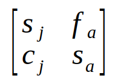The matrix of demographic rates is called the Lefkovitch matrix. If you compare the matrix with the two equations for predicting the numbers of juveniles and adults next year you'll see that each row has the demographic rates that were used for one of the equations - the first row has the demographic rates needed to calculate next year's juveniles, and the second row has the demographic rates needed to calculate next year's adults. We can express the population sizes this year as a special kind of matrix that only has a single column, called a vector. A vector that has the population sizes of each class is called a population vector. We can put our two population sizes into a vector like so:
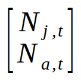To calculate next year's population size we just need to do a matrix multiplication of the Lefkovitch matrix by the population vector. Matrix multiplication is done by multiplying matching elements from rows of the matrix on the left with corresponding elements in the columns on the right, and then adding the products together. So, to get next year's population size, we would first multiply the first row of the Lefkovitch matrix by the population column vector to get next year's juveniles:
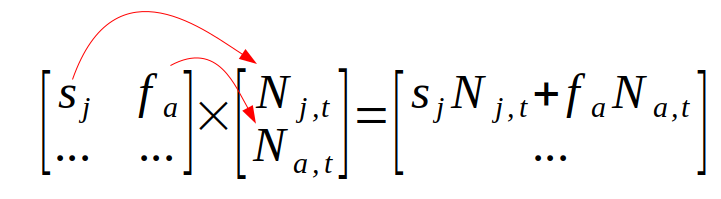and then we would multiply the second row of the Lefkovitch matrix by the population vector to get next year's adults:
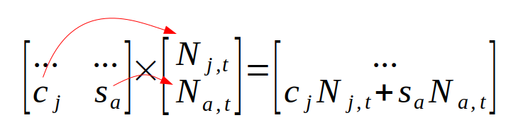Multiplying the Lefkovitch matrix by a vector of population sizes is called projecting the population. Once we have the population size at time t+1 we can project to time t+2 by multiplying the Lefkovitch matrix by the new population vector we just calculated for time t+1. We can repeat this iterative process to project the population for as many years as we like.
Analyzing a population projection
The calculations for projecting the population are done by the app below for 10 years.
| Lefkovitch Matrix | Population vector | ||||
| (from) Juvenile |
(from) Adult |
Age class |
n |
||
|---|---|---|---|---|---|
| (to) Juvenile |
s j = |
f a = |
x |
Juvenile |
|
| (to) Adult |
c j = |
s a = |
Adult |
||
Population sizes, and λ estimates
| Year | |||||||||||
|---|---|---|---|---|---|---|---|---|---|---|---|
| 0 | 1 | 2 | 3 | 4 | 5 | 6 | 7 | 8 | 9 | 10 | |
| Juveniles | |||||||||||
| Adults | |||||||||||
| Total (N) | |||||||||||
| Nt+1/Nt | |||||||||||
The app shows a Lefkovitch matrix in which the juvenile survival rate, sj, is 0.4, adult survival, sa, is 0.8, probability of survival and transitioning to adulthood, cj, is 0.1, and adult fecundity, fa, is 2.
The table at the bottom of the app gives the population projected for ten years. For example, to get the number of juveniles in the next year you would multiply:
0.4 x 75 + 2 x 25 = 80
To get the number of adults the next year you multiply:
0.1 x 75 + 0.8 x 25 = 27.5
You can see that the table gives the initial population vector as Year 0, and gives the new population vector resulting from projecting Year 0 in the Year 1 column. The total population size (N) is just the sum of the number of juveniles and adults.
To get the next year, Year 2, we multiply the Lefkovitch matrix by the projected Year 1 population to get:
0.4 x 80 + 2 x 27.5 = 87 juveniles
0.1 x 80 + 0.8 x 27.5 = 30 adults
The number of juveniles and adults that result from these ten years of population projections are graphed so you can visualize how the population is changing over time.
Effects of initial population sizes
Once you have a population projection model like this set up you can try out different demographic rates or different numbers of juveniles or adults to see how population size changes.
For example, keep all of the demographic rates unchanged in the Lefkovitch matrix, but try the following:
1. Set the number of juveniles to 0. What happens to the population?
2. Set the number of juveniles back to 75, and set the number of adults to 0. What happens now, and how is it different from setting juveniles to 0?
These two different starting conditions can be thought of as two different conservation scenarios - an oil spill might kill off the juveniles floating in the water but not kill the adults, or a storm may kill the adults attached to the rocks but not kill the juveniles. We can use the projection model to predict how the population will respond to these changes.
As you will see, losing all of the juveniles one year causes the population size to reduce, and growth in adult numbers to slow down for awhile. However, since the adults are not affected and the juveniles come from adult reproduction the number of juveniles quickly recovers, and so does the population as a whole. In contrast, losing all of the adults has a bigger effect - juveniles grow into adults, but only 10% of them become adults each year. Even though the juveniles were not affected directly their numbers decline for a couple of years while the adult population is recovering, and only then do the juvenile numbers start to increase normally again.
Estimating growth rate from population projections
If you set the number of juveniles back to 75 and the number of adults to 25 you will be back to the initial conditions when you opened the app. Population growth rate is one of the primary measures that conservation biologists use to understand the health of a population. Since we have successive population sizes projected we can use them to calculate estimates of λ - starting with Year 1 an estimate of λ is calculated as Nt/Nt-1. For Year 1 this is N1/N0 = 1.07. By year 2 the growth rate becomes 1.09 and stays there for the remaining 10 years. We will get to why the Year 1 estimate is lower shortly, but for now suffice it to say that you can estimate growth rate from a set of projections like these as long as the age classes are increasing smoothly from year to year, so that successive years of estimates all give the same number.
The growth rate doesn't depend on the population size, as long as the relative number of juveniles and adults is the same. If you double the number of each age class to 150 and 50 respectively you'll see that the growth rate estimates are identical even though the population sizes all double.
Stable stage distribution
Unfortunately, it is not always possible to estimate growth rate with this simple method of dividing the population size at time t+1 by the population size at time t.
To see clearly why this is a problem, we can change the matrix so that it represent a different kind of species that only lives two years. In this species 60% of juveniles survive and become adults, and all adults breed and then die at the end of their second year of life. To represent this life cycle set the juvenile survival (sj) to 0, transition probability (cj) to 0.6, and adult survival (sa) to 0. With this set of demographic rates there are no juveniles that remain juveniles in their second year, and no adults that survive to their third year.
You will see that this set of demographic rates results in the population with an increasing trend on the graph but with wild fluctuations. With these fluctuations in population size the estimates of population growth rate also alternate between rapid increase and rapid decrease with no indication that they are settling in to a single, consistent value.
However, if you set the population sizes equal to 64.6 for juveniles and 35.4 for adults you will get nice smooth increases in each age class, and estimate of λ that are consistent. You will also get the same behavior with any sizes you enter that are multiples of 64.6 and 35.4 - try 646 and 354 and you will get the same smooth increase from year to year, just with ten times as many individuals. Any other choices for starting population sizes will give you fluctuations.
Why did these starting sizes cause the population to grow smoothly? The values 64.6 and 35.4 represent the stable stage distribution for this population. The stable stage distribution is the relative number of each developmental stage that causes the population to change smoothly without fluctuations from year to year. When the population is at stable stage distribution it is possible to estimate λ accurately as the ratio of Nt+1/Nt.
But, populations are often not at their stable stage distributions, and it is often difficult to know if they are - the field methods used to get information about survival probabilities and reproductive rates are different from the methods used to estimate population sizes, and it is possible to know what the demographic rates are without knowing the numbers of individuals in each stage. Given that this is true, we would like to have a method of estimating growth rate that is based just on the demographic rates. The good news is that there is such a method, but it is mathematically more complex and is based on matrix algebra. We will just cover enough matrix algebra for you to follow how the calculations are done, but we will not delve into explanations for why the methods work.
Estimating λ from demographic rates
It turns out that growth rate can be calculated from the demographic rates found in the Lefkovitch matrix alone, without specifying a population vector. It's also possible to calculate the stable age distribution from the Lefkovitch matrix, and to evaluate which of the demographic rates has the greatest effect on population growth.
With a simple matrix like the one above with only two age classes we can calculate λ ourselves by hand with a little matrix algebra (which will probably be unfamiliar to you), followed by a little high school algebra (which should be a review). Above two age classes the calculations get more cumbersome and it's better to calculate them in Excel, Matlab, or R.
Calculating the eigenvalues for our matrix
Growth rates and stable age distributions are both calculated by conducting an eigenanalysis on the Lefkovitch matrix. Eigenanalysis produces eigenvalues (one of which is our estimate of population growth rate) and eigenvectors (one of which is the stable age distribution for the population). Eigenanalysis is done by finding the solutions for the matrix equation:
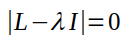L is the Lefkovitch matrix, and I is a matrix the same dimensions as L with 1's on the main diagonal and 0's in the rest of the matrix. The symbol λ is one of the eigenvalues (there will be one for every row or column in L). If we use symbols for juvenile survival (sj), juvenile transition probability (cj), adult fecundity (fa) and adult survival (sa) in L, the equation becomes:
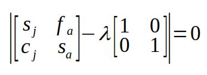The eigenvalue, λ, is a single value (called a scalar in matrix algebra terminology), so it is just multiplied by the elements of the identity matrix:
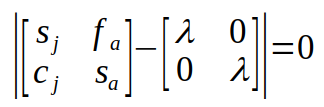Subtracting the two matrices is done by subtracting matching elements:
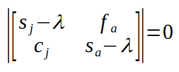The two vertical lines indicate that we need to do a matrix operation called the determinant. The determinant of a 2x2 matrix is the product of the elements on the main diagonal (from upper left to lower right) minus the product of the off diagonal (from upper right to lower left):
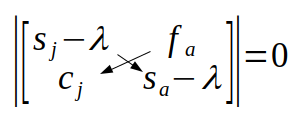With some simplification we get:
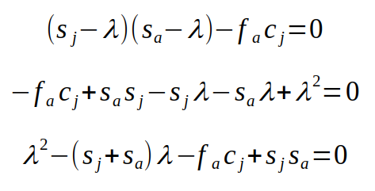The final equation is a quadratic equation with λ as the variable, called the characteristic equation for the matrix. With more than two stages we would have higher order terms (i.e. λ3 if there was a third stage, λ4 if there were four stages, and so on), which make the solutions more difficult to find. However, we know that we can find the two solutions for a quadratic equation using the quadratic formula - if you recall, the a, b, and c terms int he quadratic formula are the coefficients on λ2, λ, and the constant from the quadratic equation. For our characteristic equation, that would make a = 1, b = -(sj+sa), and c = -facj + sjsa:
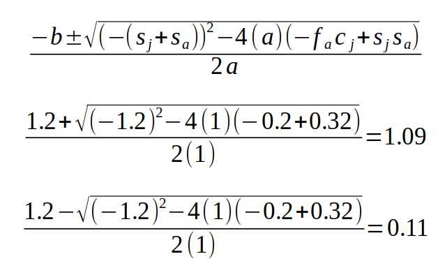The two solutions are the two eigenvalues for the Lefkovitch matrix, and the largest positive real eigenvalue is the growth rate, λ. If you compare the value calculated this way to the estimate from the Lefkovitch matrix above once the population is in stable age distribution you will see that they match.
As you can see, we were able to calculate the growth rate for this population with only the demographic rates, not knowing the numbers of individuals in the population as a whole, or in either of the age classes.
Calculating eigenvectors and stable stage distribution
Each of the eigenvalues has an eigenvector associated with it. We can use the eigenvector for the eigenvalue that is our population growth rate to calculate the stable age distribution.
Calculating eigenvectors for larger matrices is cumbersome, but the calculations are simple for a 2x2 matrix like ours. The eigenvector is made up of two elements, one for the juveniles and one for the adults. The calculation is different depending on whether particular elements in our Lefkovitch matrix are equal to zero, but the one that works when fecundity is greater than 0 is:
Juveniles: fa = 2
Adults: λ - sj =1.09 - 0.4 = 0.69
To convert these values to the proportion of the population that is juvenile and the proportion that is adult at stable age distribution you just need to divide each number by the sum of the two:
Juveniles: 2/(2+0.69) = 0.744
Adults: 0.69/(2+0.69) = 0.256
At stable age distribution 74.4% of the population is juveniles and 25.6% is adults. If you plug 74.4 and 25.6 into the app above you'll see that every year's projection gives a growth rate estimate of 1.09, which demonstrates that it is indeed the stable age distribution. Any multiple of 0.744 and 0.256 are also stable able distributions, so plugging in 744 and 256 will also work.
You already learned that when a population is at stable age distribution you can estimate λ by dividing the population size at t+1 by the population size at t. The converse is also true, in that at stable age distribution you can accurately predict the population size at time t+1 by multiplying the population size at t by λ. It's also true that the number of juveniles at t+1 is the number at t multiplied by λ, and the same is true for adults.
| Lefkovitch Matrix | Stable stage distribution | ||||
| (from) Juvenile |
(from) Adult |
N | |||
|---|---|---|---|---|---|
| (to) Juvenile |
sj = |
fa = |
Juvenile | 744 |
|
| (to) Adult |
cj = |
sa = |
Adult | 256 |
|
λ = 1.0899
We can use this app to see how changing demographic rates affects the growth rate as well as the stable age distribution for the population, using the equations we derived above. You can use the app to change the demographic rates and it will calculate λ and the stable age distribution for that set of rates for you. Note that all of the values sj, cj, and sa are probabilities, and should be between 0 and 1 - the app won't correct you if you enter numbers outside of that range but the results will be nonsense.
First, find a value for adult fecundity (fa) that stabilizes the population. Since λ starts off at 1.09 you will need to reduce it - try reducing it by 0.1 offspring per adult until λ equals 1. Note that the stable age distribution changes slightly - it is determined by the values of the demographic rates in the Lekovitch matrix, so changing the rates changes stable age distribution.
Next, we can explore the different ways that a species with a juvenile and adult stage can achieve stable populations. For example:
- Set adult fecundity (fa) to 100 - this will mimic a species with high reproductive output. Then change the juvenile survival (sj) and transition (cj) rate until λ equals 1 (hint: start with a juvenile survival rate of 0.0002 and then change the transition rate until lambda goes to 1.0000). You should see that species that produce a large number of offspring generally have low juvenile survival probabilities - if they didn't we would be up to our eyeballs in the species in short order. You will see that a species like this will generally have a lot of juveniles per adult.
- Set adult fecundity to 0.2 - this will mimic a species with very low reproductive rates, with only one offspring per adult on average every five years. Then find juvenile and adult survival rates that make λ equal 1 (hint: set juvenile survival and transition probabilities back to 0.4 and 0.1, respectively, and then increase adult survival until lambda is equal to 1.0000). Usually a low reproductive rate is accompanied by very high adult survival, and usually reasonably high juvenile survival. A species like this will have fewer juveniles per adult.
So, there is more than one way for a species to have a viable, stable population. Since demographic rates reflect different life history characteristics they tend to trade off against one another - a species with high fecundity as adults will generally have low juvenile and/or low adult survival, but species with low adult fecundity generally need to also have high juvenile survival and/or high adult survival. If a species had low fecundity and low survival probabilities it would go extinct, so these combinations are not generally seen in nature.
Elasticity of growth rate to changes in demographic rate
Another advantage of using our matrix approach to calculating growth rates is that we are able to change the demographic rates one at a time to see which one has the biggest effect on population growth rate. If we change the demographic rates by the same absolute amount we are evaluating the sensitivity of growth rate to changes in each demographic rate. If we change each demographic rate by the same proportional amount we are evaluating the elasticity of growth rate to changes in each demographic rate. Elasticity is usually the preferred measure, since it accounts for the fact that probabilities and fecundities are measured on different scales.
Set the demographic rates back to the levels that produced a stable population: sj = 0.4, fa = 1.2, cj = 0.1, and sa = 0.8.
Next, one at a time, set the rates to 90% of their initial values. To do them one at a time, calculate 90% of sj and set it, then put it back to 0.4 before moving on to fa, and so on. Each time you change a demographic rate record λ. The demographic rate that causes the biggest reduction in λ when it is reduced by 10% is the one that has the highest elasticity.
What good is this information? It is often the case that different stages are subject to different kinds of management intervention. Juvenile survival may be a function of water quality, while adult survival is a function of loss of rocky intertidal habitat, and fecundity is a function of availability of food. Knowing which demographic rate has the biggest effect on population growth can direct your attention to management practices that improve that rate.
Population viability
Knowing the basics of population biology is necessary background for a conservation biologist, but when a population is potentially at risk the question that needs to be addressed is: is this population I'm trying to protect viable? A viable population is one that we can say with a high level of confidence will persist over time - that is, the population has a low probability of going extinct for the foreseeable future. Given what you've learned so far, answering this question should involve calculation of a growth rate from measured demographic rates for a population.
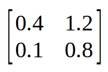Consider the Lefkovitch matrix to the left. It has the same juvenile survival, juvenile transition, and adult survival rates as you have been using, but the adult fecundity is set to 1.2 so that the population growth rate is λ = 1. From a conservation biologist's perspective this population is stable, and we do not need to worry about it going extinct, unless something changes. Right?
The problem with this general approach is that it assumes that populations are deterministic. Deterministic means that the system behaves predictably, with the same output every time you use the same inputs. When you projected a population out 10 years, above, you multiplied a population vector by a Lefkovitch matrix, and then used the result as the population vector for the next year. As long as all the demographic rates and initial population sizes were set to the same value your population projection would be the same every time - projecting in this way is deterministic.
But, real populations don't behave so deterministically. Real populations are subject to a variety of sources of mortality and variation in numbers of births that cause the actual population size to be different from what we would predict by multiplying the Lefkovitch matrix by a population vector. Unpredictable variation is called stochasticity, and stochastic variation in births and deaths can cause a population to go extinct even when it has demographic rates that produce a λ greater than or equal to 1.
Stochasticity
To understand how we can incorporate random variation into our assessment of a population's status we need to first understand the ways that randomness affects populations. There are three sources of stochasticity that we typically concern ourselves with:
- Demographic stochasticity - individual random variation around the demographic rates due to individual births and deaths. The demographic rates from the Lefkovitch matrix are treated as statistical population parameters that do not change over time, but the actual number of births and deaths each year is a random draw from a distribution.
- Environmental stochasticity - random changes in the demographic rates due to annual changes in environmental conditions. Normal variations in temperature, precipitation, predator abundance, food availability, and other ecological factors can produce good years and bad years for birth and death rates, which means that the demographic rates themselves vary over time.
- Catastrophes - random, unpredictable major sources of mortality, such as hurricanes, wildfires, floods, and other large-scale, low frequency events.
In a real population each of these sources of stochasticity affects populations at the same time, but we can build population models that only include one at a time so that we can study their effects in isolation. Once we understand each source of stochasticity individually we will combine them into a single model to see how they work together to affect a population's chances of persisting over time.
Demographic stochasticity in fecundity
Let's start by thinking about what a fecundity of 1.2 in our Lefkovitch matrix actually means. A fecundity of 1.2 doesn't mean that every individual in the population had 1.2 offspring, and in fact it can't mean that because offspring only come in integer numbers (you can't have 0.2 babies). Rather, 1.2 is the average offspring per adult in this population. The actual number of offspring birthed by any single individual will differ from individual to individual in an unpredictable way.
We can model unpredictable variation using a random variable. As you may remember from your statistics class(es), a random variable is one that gives you unpredictable outputs for the same input. We usually use probability distributions to model random variables, and the one you are probably most familiar with from your statistics class is the normal distribution. If we were to use the normal distribution to model individual variation in reproduction, it would represent individual variation in offspring number, and would be defined by the mean and standard deviation in offspring number among individuals. When we use the normal distribution to represent a variable like offspring number we are saying that we don't know how many offspring a randomly selected individual will have, but we can make some predictions about the probability that the number of offspring will fall between any two possible values. If we used the normal distribution to randomly select the offspring number for individuals, we would expect most individuals to have offspring numbers near the mean, with the probability of an offspring number getting lower as you move above or below the mean.
The normal distribution is fine when you're working with a continuous variable like height, but offspring come in whole numbers, and the number of offspring an organism has is a discrete, integer number. A good model for a discrete random variable, in which the numbers can only come in whole units (i.e. 0, 1, 2, 3, etc.) is the Poisson distribution. The Poisson distribution is different from the normal in that it only has one parameter that defines its shape, because the mean and the variance are the same (the standard deviation is the square root of the variance). The graph to the left side of the app below shows you a Poisson distribution with a mean of 1.2 - you'll see that the possible outcomes for this distribution are offspring numbers of 0, 1, 2, 3, up to infinity (although only numbers up to 8 are shown). The heights of the bars are probabilities of each outcome. Because the distribution only allows non-negative integers as outcomes it has a minimum number of offspring of 0, which makes the distribution right skewed when the mean is small - you can see that an offspring number of 1 has the highest probability, 0 has the next highest probability, and numbers 2 or greater have smaller probabilities that decrease as the offspring number gets larger. The probability of a really big number of offspring isn't 0, but any number over 5 becomes so unlikely that we can safely ignore large numbers (this app only considers offspring numbers up to 8).
Each time the app is executed a single individual's number of offspring is selected, and the number of offspring selected is indicated in red in the graph to the left - you can read the number of offspring for that individual from the x-axis under the red bar.
The graph on the right of the app doesn't show much at first because only a single individual has been selected, but as you hit the "Select a random number of offspring" button it will show the average of all the individuals selected so far. Each time you select a new individual it will be added to the population and its number of offspring will be averaged in with those chosen previously. Each new average is added to the plot, connected by a line to the previous averages. Calculating a new average with each added data point is a running average. As each new individual is selected the population is being increased by 1, so you can read the x-axis as being the population size, and the y-axis as the mean reproductive output for your sample population at a given size.
The first time you run the app what you should see is that when you first start selecting individuals the average number of offspring can be quite different from the distribution's mean of 1.2, because with only a few individuals a single big number, or a string of 0's in a row, can occur that then have a large effect on the mean. Randomly sampling individuals from a population can give you sample means that are really different from the population mean of 1.2 when the sample size is small. However, as you select more and more individuals the average stabilizes near 1.2. There is one horizontal guide line at 1.2 for your reference - you should see that the line representing the mean converges on this guide as you increase the population size.
Hitting the button repeatedly produces one possible set of randomly selected individuals, but any random sample you take will have different individuals in it, and will therefore not give you exactly the same results. You can see how a different set of individuals looks by resetting the graph and running the app again - hit the "Reset" button and repeat, and you'll see that although the way that the mean varies with small numbers of individuals can be quite different this time with a different set of individuals, the mean still stabilize near 1.2 as you select more and more individuals. The second run is like a second year's population - even if the mean number of offspring stays at 1.2 for this population, the number you actually get in two different years will be somewhat different due to this random sampling effect.
Demographic stochasticity is this effect - it is the random variation in sample means that happens when you sample different individuals from a population with a fixed, unchanging mean.
What does this app show you?
- You should expect that when the population is small stochastic variation in reproductive rate will make populations change unpredictably
- You should expect that as the population size increases the mean reproductive rate will always be close to the rate of 1.2 given in the Lefkovitch matrix, and the population should stay fairly stable over time.
Demographic stochasticity in survival and transition probabilities
What you learned about fecundity from the previous app is also true about survival and transition probabilities - they represent the average at a population level. We need to model survival differently, though, because survival is a binary variable, meaning there are only two possible outcomes for each individual - they either live or die. We would not use a Poisson distribution to model survival, because it models counts, not 1/0 outcomes.
This app illustrates how stochasticity in survival rates works using juvenile survival as an example. Any single individual juvenile either lives or dies, with the probability of living equal to the juvenile survival probability of 0.4. The two bars in the graph to the left represent the two possible outcomes of living (with a height of 0.4) or dying (with a height of 0.6). A random number between 0 and 1 is selected, and if it is between 0 and 0.4 the individual is considered to have lived, and "Live" bar turns red. If the random number is between 0.4 and 1 the individual is considered to have died, and the "Die" bar turns red. Initially the app has randomly selected whether the first individual lives or dies, and the bar colors are set accordingly. The graph to the right will keep track of repeated random selections - each time you select an additional individual the total number that lived is divided by the total number of individuals you selected to give a probability of survival. The more times you select the bigger your population gets.
As you saw with random variation in fecundity, random variation in survival can result in big deviations away from the juvenile probability of survival of 0.4 at small population sizes, including cases in which every individual lives or all of them die, but as the population gets larger it becomes increasingly unlikely that every individual will have the same outcome. As the population size gets larger approximately 40% of the individuals will survive, just like the juvenile survival probability of 0.4 predicts. See how large the population has to be before the survival rate converges on 0.4 and adding new individuals doesn't cause the population to pull away from that number.
As you reset and repeat you will see that the way that the probabilities deviate is always different, but as the population size increases you will always converge on 0.4.
Because of this consistent tendency for survival rates to converge on the rates in the Lefkovitch matrix at big population size, we expect that demographic stochasticity in survival will be a big issue when populations are small, but will stop having much effect on population size when populations are large.
To sum up: with demographic stochasticity the demographic rates in
the Lefkovitch matrix are held constant, but are used to define
distributions of random outcomes that we sample from.
Demographic stochastic effects on population size
Now that you understand how demographic stochasticity works you can see how it affects populations. We will start with the Lefkovitch matrix above that gives us a growth rate of λ = 1. With that set of demographic rates the only reason for variation in population size over time in the app below is demographic stochasticity.
Population size (adults + juveniles):
Final population size:
When you run the app you are only allowed to set the population size of the adults and juveniles combined. The initial population size for each age class is set at the stable age distribution values (i.e. 67 juveniles and 33 adults when the initial size is 100), and then each generation that the population is projected demographic stochasticity is added using the methods you learned about in the apps above. The population is projected for 100 years, and the population sizes of juveniles and adults each year are graphed. The final population size is reported below the initial size.
If the population size ever declines to 0 the population has gone extinct, and no further change occurs. The final population size will report 0, and the lines on the graph will touch the x-axis at some point and stay there for the rest of the run.
With an initial population size of 100 there is clearly some demographic variation, and you will sometimes see the population decline to 0 (not frequently, approximately once every 40-50 runs).
Next, try setting the population to a small number (such as 10) and run the simulation repeatedly - demographic stochasticity has a bigger effect at smaller population sizes, for two reasons:
- The possibility of no reproduction or no surviving individuals in a year becoming greater. A single year in which none of the juveniles or adults survive is enough to wipe out the population, and this is more likely to happen when the population size is small.
- With such a small population size it doesn't take too many years in a row of low reproduction or low survival to wipe out the population.
With both of these factors in play, extinction due to demographic stochasticity is much more likely when the population is small, and you will see extinctions much more frequently when the population is small to begin with.
Now increase the population size to 1,000 - you will see that the population size varies much less over time, and extinction becomes a rare occurrence. This happens because both of the causes of extinction get better with large population size - the demographic rates will be much closer to the averages in the Lefkovitch matrix, so there will be less variation from year to year, and variation is less likely to cause extinction if you start with a large population size because it takes more bad years in a row to cause the population to decrease to 0. At a population size of 1000 you will probably not see any extinctions, no matter how patient you are in hitting the button.
Finally, increasing the population size to 10,000 results in very stable populations. Demographic rates should be very close to their Lefkovitch matrix values every year with such a large population size, so there is very little change in population size from year to year. At a population size of 10,000 demographic stochasticity is such a small effect that we can safely ignore it.
Environmental stochasticity
Environmental stochasticity is a reflection of variation in the environment. Environmental conditions change from year to year, and the environment influences survival and reproduction - some years are good for survival and reproduction, some are not. Whereas demographic stochasticity was due to random sampling variation around the unchanging values in the Lefkovitch matrix, environmental stochasticity causes the values in the Lefkovitch matrix to change from year to year.
The kinds of environmental factors that cause survival and reproductive rates to change are things like rainfall, temperature, predation rates, and disease outbreaks. Even though there are environmental causes for this kind of variability we are generally not able to predict what the environmental conditions will be next year, much less decades in advance, so ecologists generally model environmental stochasticity as a random variable - that is, it is treated as unpredictable, unexplained, random variation.
The app below shows how environmental stochasticity in survival and reproduction would affect populations over time. The survival and reproductive rates are selected at random from a set of possible rates each year. On average the population is stable, so we expect to see the population fluctuate around the starting population size you select without either increasing or decreasing consistently over time. You can also select the amount of annual variation to model either a relatively stable environment (like a climax forest), a relatively variable one (like sand dunes), or something in between.
Amount of environmental variability:
Starting N:
Final population size:
Just like with demographic stochasticity, if the population size goes to 0 the population is extinct, and doesn't change anymore. With the initial population size set to 100 and with low environmental variability selected the numbers of juveniles and adults will change unpredictably each year but you won't get extinction very often. If you select Moderate or High amounts of environmental variability you'll see an increase in the amount of fluctuation in population size, and with High variability selected you will start to see some extinctions.
Decrease the population size to 10 and extinctions will happen more frequently for High levels of variability. Note that we aren't allowing demographic stochasticity here, so population size isn't having any effect due to random sampling. However, when you start with a small population size it doesn't take too many bad years in a row to cause the population to decline to the point of extinction.
If you increase the population size to 1,000 the patterns of change in population size look just like those for a population of 100, but the y-axis shows larger numbers. Extinctions become less likely because it takes a longer string of bad years to drive a big population extinct, but the amount of variability is unchanged. Increasing the population size to 10,000 or more shows the same thing.
Environmental stochasticity isn't greater at low population size, but small populations are more at risk of extinction just because they are closer to a population size of 0. Environmental stochasticity doesn't disappear or become unimportant to population size as the population increases. Consequently, we can't treat environmental stochasticity as being unimportant at large population size - it is less likely to cause extinction, but still causes variability in the size of the population even if the population is large.
Catastrophes
Catastrophes are unpredictable events that affect a large fraction of a population. Examples of catastrophes include events such as hurricanes, fires, floods, tornadoes, and other natural disasters.
Modeling catastrophes can be complicated, in that the catastrophes listed above affect habitat as well as directly killing some fraction of the population. Recovery from catastrophes can include community succession that can take decades to complete, and while an area is recovering from a catastrophe it may not be good habitat for the population.
However, to keep the models simple, and to keep catastrophes conceptually separated from the other types of stochasticity, we'll treat catastrophes as infrequent events that kill off between 10% and 90% of the individuals currently in the population, but do not otherwise affect the demographic rates. In other words, catastrophes affect the population vector, but do not change the demographic rates in the Lefkovitch matrix.
Starting N:
Final population size:
To visualize how catastrophes affect the population we need to have a population that has a positive growth rate so that there can be recovery between catastrophic events. For this app adult fecundity is set to 1.3, which allows for the population to grow between catastrophes - increasing fa to 1.3 increases λ from 1 to 1.0123, which means we expect an increase of 1.23% per year. This may not seem like much, but with a starting population size of 100 the final population size would be over 330 after 100 years of 1.23% growth. When a catastrophe occurs in a year the current size of the population is reduced, but since the demographic rates are unaffected the population begins to grow again immediately. Catastrophes that have a high intensity (i.e. kill a large fraction of the population) and high freqeuncy (i.e. happen repeatedly) can drive a population to a low enough population size for it to go extinct.
The app is based on catastrophes that occur once every 25 years on average. With one per 25 years on average we would expect 4 catastrophes to occur in a single simulation. However, a frequency of 1 per 25 years translates into a probability of a catastrophe in a given year of 1/25 = 0.04. Although on average we would expect 25 years between catastrophes they occur at random, so they can happen with little or no time between them by chance, or they might not happen at all for the full 100 years of the simulation. Each time you run the simulation you'll get a different set of randomly generated catastrophes.
The only thing you are able to change for this simulation is the starting population size. If you run the simulation multiple times with the default population size of 100 you will see that the population occasionally goes extinct.
Next, if you reduce the population size to 10 extinctions will happen more frequently, because a small population can more easily be dropped to 0.
Increase the population size to 1,000 and extinctions become rare. Increasing the population size to 10,000 makes them even rarer still.
You should see from these runs that catastrophes affect populations at all population sizes, like environmental stochasticity does. Also like environmental stochasticity, the variability that's caused by catastrophes is a problem for small populations because they start closer to a population size of 0 and it takes fewer losses to cause them to go extinct, but catastrophes are important effects on population size even when the population is large to begin with.
So, to sum up:
- Demographic stochasticity is primarily a problem for small populations. At large population size it becomes negligible.
- Environmental stochasticity and catastrophes have effects on populations of all sizes, but they cause extinction primarily in small populations because small populations are closer to extinct to begin with, and can be driven to extinction with just a few years of bad conditions.
Now that we understand how these three forms of stochasticity affect populations separately, we can see how the joint effects of these three types of stochasticity affect the viability of populations.
Population viability analysis
One of the great advantages of mathematical models is that it's possible to study the effects of single factors at a time - we can isolate the effects of demographic stochasticity, environmental stochasticity, and catastrophes to see how they are expected to affect populations separately. However, in real populations all three of these stochastic effects act at once, and can amplify each others' effects.
Accounting for all of the factors that can affect populations is important for population viability analysis, or PVA. Typically PVA's are done to evaluate the chances that a population will avoid extinction during a specified period of time, usually either 50 or 100 years. Given that random variation makes a population's fate unpredictable a PVA model has to be run multiple times to see what the typical outcome is, and what the range of possible outcomes looks like. The number of times the population has not gone extinct divided by the number of model runs is interpreted as the probability of going extinct in that time frame. Viability is usually defined in terms of a desired probability of the population surviving for the entire time period - for example, we might consider a population viable if it has a 95% chance of surviving 100 years.
The final app below incorporates all three of the sources of stochasticity into a single model. Environmental stochasticity sets the year's survival probabilities and fecundity, and then demographic stochasticity reflects that year's demographic rates. Catastrophes happen periodically to set the population back. If the population size ends up at 0 for a run the population goes extinct in that run. Repeating the runs multiple times allows you to see how often the population is expected to go extinct.
| Lefkovitch Matrix | Population vector | ||||
| (from) Juvenile |
(from) Adult |
Age class |
n |
||
|---|---|---|---|---|---|
| (to) Juvenile |
s j = |
f a = |
x |
Juvenile |
|
| (to) Adult |
c j = |
s a = |
Adult |
||
The graph shows a single run of 100 years for a population that has demographic rates that give us a value of λ of 1 in the absence of stochasticity. The starting population size is 100 total, with 75 juveniles and 25 adults. There is a moderate amount of environmental stochasticity, and the demographic rates each year are determined by it. Once the rates are selected they are used to generate the demographic stochasticity. Each year has a 0.04 probability of a catastrophe (that is, catastrophes occur every 25 years on average), and when they occur they take between 10% and 80% of the existing population.
There are two questions you will address with this app:
- What population size gives a high probability of the population avoiding extinction over 100 years with the default demographic rates unchanged? That is, what is the minimum viable population size with this set of demographic rates for a population subject to stochastic variation?
- What demographic rates are needed to reduce the chances of an extinction to 1% or less for a population of 100 individuals? That is, what growth rate is needed to avoid extinction for a small population that is subject to stochastic variation?
To address the first question keep all the Lefkovitch matrix values unchanged. Click "Push to run again" 100 times and record the extinction rate. Then change the numbers of juveniles to 750 and the number of adults to 250, hit "Reset counter" and then run again for 100 clicks. Finally, set the population sizes to 1500 and 500 and run again. You should see that it takes 2000 total individuals to reduce the chances of extinction over 100 years to less than 10%.
To address the second question put the population sizes back to 75 juveniles and 25 adults. Then increase adult fecundity by 0.1 or 0.2 offspring per generation until the extinction rate drops below 10%. Record the needed fecundity.
Put the adult fecundity back to 1.2 and then increase juvenile survival by 0.1 until the extinction rate drops below 10%. Note that the total juvenile survival rate is actually juvenile survival plus juvenile transition probability, so with transition probability of 0.1 you shouldn't go above 0.9 for juvenile survival probability. Record the needed juvenile survival probability.
Put juvenile survival back to 0.4 and try increasing the adult survival until extinction rate drops below 0.1. Record the needed adult survival probability.
From this set of trials you'll see that the only way to avoid extinction with the original set of demographic rates is to have a really big population size, and big declines in population size are likely. To have a smaller population avoid extinction it's necessary to have demographic rates that give growth rates higher than 1, because the population needs to be able to rebound from low population size. Stochasticity generally increases the size of population needed, and the demographic rates needed, to avoid population extinction.
Summing up: what have you learned?
A population with a λ of 1.0 is viable in a deterministic world, but in a stochastic world the population may only be viable if it is large. For a smaller population it may be necessary for λ to be higher so that the population is able to recover after bad years. Environmental stochasticity and catastrophes affect populations at all sizes, and can reduce a population to the point that demographic stochasticity becomes a problem. Since small population size is a risk factor for extinction from any of these sources of stochasticity, it is desirable to maintain large population sizes whenever possible to avoid extinctions.